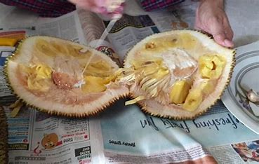
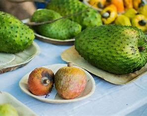

Mango
Famous for the Alphonso Mango, Konkan is known for its sweet, buttery,
and aromatic mangoes, often called the "King of Fruits."

jackfruit
A large tropical fruit with sweet, fibrous flesh, commonly used in
curries and desserts. Konkan’s jackfruits are known for their creamy texture and rich flavor.

Ram fal
Also known as Custard Apple, this fruit has a creamy, sweet flavor and a
bumpy green skin. It’s a refreshing treat in the Konkan region.
Kashue
Konkan is famous for its cashew nuts, grown on tropical trees. The nuts
are rich in protein, and the cashew apples are used for juice and jams.